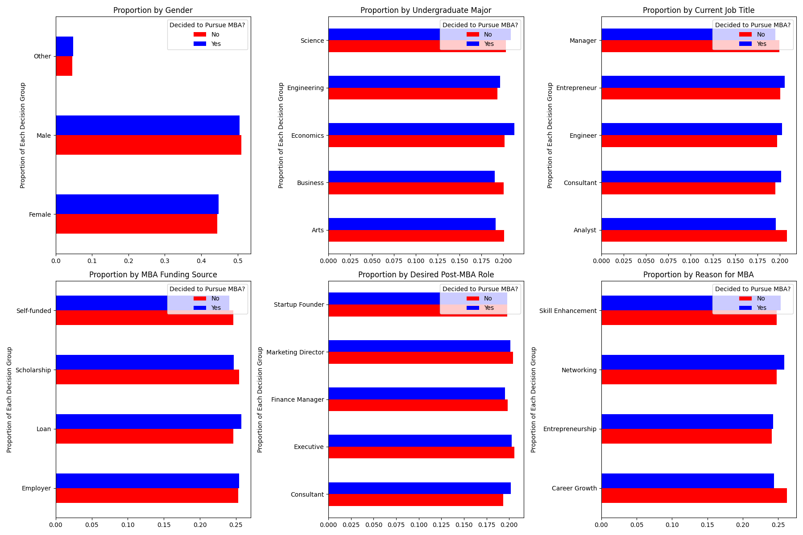

Deciding whether to pursue a Master of Business Administration (MBA) degree is a significant
choice that can shape an individual’s career, financial future, and personal development.
While an MBA can open doors to leadership roles, expand professional networks, and enhance
business acumen, it also comes with substantial costs and time commitments. With ongoing debates
about the return on investment, many individuals struggle to determine whether an MBA is the right
path for them.
Understanding the key factors that influence this decision—such as academic background, test
scores, career goals, and market trends—can provide valuable insights. By analyzing past
decisions and identifying key predictors, we can help individuals make more informed choices
about whether an MBA aligns with their professional aspirations and financial circumstances.
Additionally, these insights can benefit institutions and employers by refining admissions
processes, improving recruitment strategies, and shaping career development initiatives.
We use a comprehensive Kaggle dataset containing exactly 10,000 records and 20 features. The
key attributes include demographic information (e.g., age, gender), academic performance
metrics (e.g., GPA, GMAT/GRE score), professional background (e.g., years of work experience,
current job title), and motivational factors (e.g., desired post-MBA role, expected salary).
This rich dataset enables us to explore the interplay of these factors and their impact on the
decision to pursue an MBA.
Columns:
This side-by-side boxplot shows the quartile range of individuals' salaries before and after pursuing an MBA, separated by gender.
Across all of the genders, a noticeable increase in salary was recorded with the acquisition of an MBA.
It was a pleasant surprise that salaries overall were similar between male and female and moreso dependent on MBA possession status.
The pre-MBA median salaries were $75,423 for females, $75,462 for males, and $78,493 for other genders.
The post-MBA median salaries were $128,884 for females, $129,165.5 for males, and $140,978 for other genders.
This shows that, on average, people of other genders make a bit more than both male and female individuals.
Whatever the reason for pursuing an MBA, it seems to have financially worked out for the individuals in our dataset.
At the point of decision-making when considering their MBAs, the individuals in our dataset came from a variety of career paths.
They were consultants, engineers, entrepreneurs, managers, and analysts.
Across the data, the percentage of individuals who decided to pursue the degree is rather consistent at or around 60%.
Managers pursued slightly less than the median 60% rate, and analysts less still but close.
This makes sense as individuals titled "analsyt" are usually at the beginning of their careers in the financial realm.
Managers, on the other hand, are more senior and perhaps more likely to be happy with their career positioning without a further degree.
Now we will dive into some other factors that may have influenced these individuals to make the decisions they made.

In this figure, we examine how various aspects of a candidate’s background relate to their decision
to pursue an MBA by analyzing six key factors: Gender, Undergraduate Major, Current Job Title, MBA
Funding Source, Desired Post-MBA Role, and Reason for MBA. Each panel displays a horizontal bar
chart for one of these categorical features.
Due to the overall imbalance in our dataset—where approximately 5,900 candidates decided to pursue an MBA
compared to 4,100 who did not—we normalized the data by dividing each value by the total count in its
corresponding MBA decision column. This approach allows us to compare the proportion of each feature
across the two groups.
The normalized charts reveal that the distributions between those who chose to pursue an MBA and
those who did not are quite similar. This suggests that, when accounting for the imbalance in total
counts, the data is evenly distributed across the different categorical variables.
This interactive scatter plot examines the relationship between academic performance and standardized test
scores among prospective MBA candidates. The horizontal axis represents the Undergraduate GPA
(ranging from 2.0 to 4.0), while the vertical axis displays the GRE/GMAT Score (with a domain from 250 to
800).
Each data point corresponds to an individual candidate and is color-coded to indicate whether they decided
to pursue an MBA.
A key feature of this visualization is the dropdown filter for Undergraduate Major, which allows users to
focus
on specific fields of study. By selecting a particular major, one can compare their stats with people in a
similar
major, and how these might correlate with the MBA decision. Tooltips enrich the experience by providing
additional
information, such as work experience and detailed academic metrics, thereby giving users more to explore.
The side-by-side bar plot shows the relationship between the desired post-MBA role and the average years
of work experience for each role. Each stack shows the average years based on the decision to pursue an MBA.
The x-axis of the graph is each of the desired roles, and the y-axis is between 4 and 5 years because every
average was in that range and it is easier to see the differences in the bars this way. A tooltip is added to
give the exact height of the bar.
This graph provides insights into what experience people had before choosing to pursue an MBA and one of the
motivational factors recorded in the data. People can use this to compare their current status and career aspirations
against previous history to help them decide if it is worth it to pursue an MBA. For example, someone who wants
to be a consultant or a marketing director would look at this graph and compare how many years of work experience
they have in their field to the average for people who chose to and chose to not pursue an MBA. They could see that
if they have a lot of experience in the field, they might decide to not puruse an MBA based on this graph. The opposite
could be said about someone whose desired role is startup founder, where the relationship is inverse: less
experience led to no MBA for those.
Assuming someone chose to puruse an MBA, they would expect to see a change in salary. The breakdown of this distribution
is shown on the graph below.
In summary, our analysis of the MBA decision dataset revealed meaningful patterns in how demographic
details, academic performance, professional background, and motivational factors influence the choice to pursue an
MBA. The findings provide insights that can inform both prospective students and educational institutions about
key predictors of this major career decision. These decisions, pursuing an MBA, are time-consuming and come with a cost,
so it is necessary to look at multiple factors to aid this decision. With these visualizations, people should have a
better idea where others stood before and after their MBA, which should only aid them.
For future work, we plan to refine our predictive models and incorporate additional economic and qualitative
factors to further deepen our understanding of the MBA decision-making process. We saw that the data was distributed
very evenly, so more columns in the data would identify more trends that could help people. There were other factors like
how they would pay for an MBA, which would also have a positive impact on decision-making, so including graphs with this
variable would be beneficial.